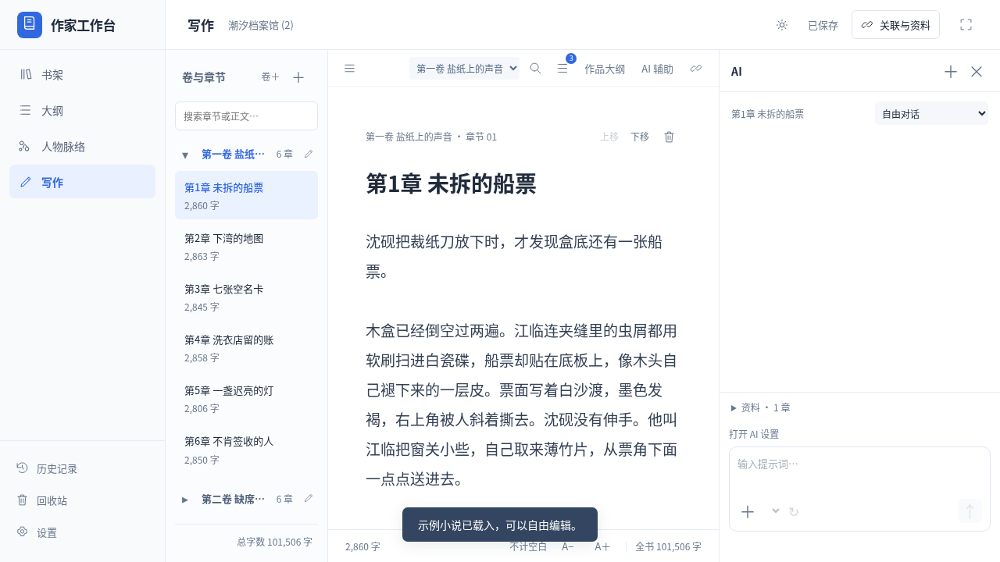
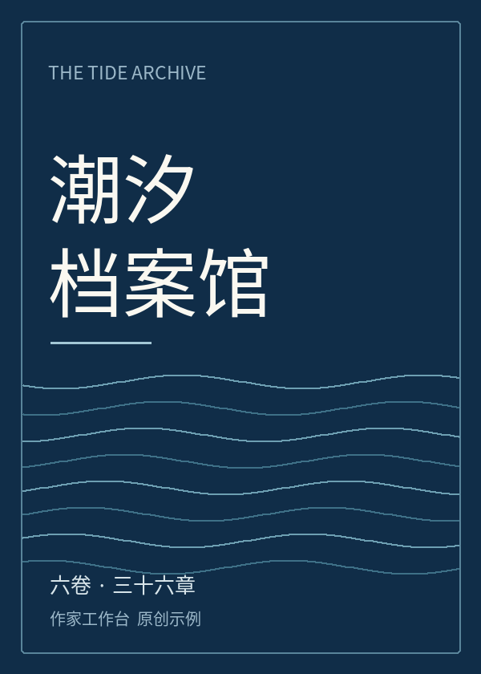

每个故事，各有位置
长篇与短篇分别管理。预览导入 DOCX、TXT、Markdown 稿件，每本书有独立的封面、书名与文件夹。
从第一个念头，到最后一个句号。
把大纲、人物和正文，放进属于你的写作空间。
本地优先无需账号免费开源

长篇按卷章写作，短篇是一篇连续正文。界面记录 · v0.6.0
先想清楚，再安心写。灵感与资料，随时回到手边。
长篇与短篇分别管理。预览导入 DOCX、TXT、Markdown 稿件，每本书有独立的封面、书名与文件夹。
从全书、分卷到章节，分类梳理、连续阅读。追踪伏笔，排列故事时间，通过关联回到正文。
档案、别名、阵营与主题分图。人物、大纲和正文章节双向关联，复杂关系也能看清。
离线校对、批注书签与版本对比。本机和外部盘自动备份，可复用模板导出 Word、EPUB、PDF。
保存多套兼容 AI 服务，对话中快速切换。流式回复、前文记忆和实际用量记录，结果确认后再采用。
每日目标、写作日历与字数趋势。日夜与护眼模式，自由调整分栏，中英文界面随时切换。
卷章拖动排序、批量移动、拆分与合并。双稿独立编辑，各自滚动，保留输入法与原生撤销。
每书保存图片、PDF、文字和网页摘录，关联章节与资料。跨书搜索正文、大纲和素材，直接打开原记录。
自建本机或局域网同步服务，手机继续写，邀请可编辑或只读成员，保留冲突原稿。PWA 离线启动需要可信 HTTPS。

内置原创群像小说，附有 12 条伏笔、18 个时间事件、6 个书签与 3 条批注。查看大纲和人物分图，跳转标记段落，试试版本对比与排版导出。
示例为中文，字符数包含标点。可自由编辑或删除，不影响自己的作品。
v0.8.0 测试版 · 内置运行环境，可在 App 设置中检查更新。
Windows 10 / 11 · x64
下载 .exe安装向导 · 桌面快捷方式macOS 13 及以上
DMG · 支持触控板操作Ubuntu 22.04+ · amd64
下载 .deb便携版 .tar.gz →测试版签名状态：Windows 未签名；macOS 为临时签名，尚未公证。Mac 实体触控板体验仍需实机验收。
发行说明与 SHA256 校验可以。写作、稿件导入、校对、批注书签、大纲、人物脉络和备份都在本机完成，无需账号。AI 功能需要连接你配置的服务，也可以使用兼容的本地模型服务。
保存在系统用户数据目录，与程序安装目录分开。通过「设置 → 关于 → 本机数据目录」查看。迁移到另一台电脑时，逐书导出完整 JSON，再到新设备导入。
不用。核心写作功能无需 AI。若要接入兼容 API，需自己配置服务与密钥，费用由对应服务方收取；生成结果确认后才会写入作品。
都进入同一个「写作」入口。长篇有卷和章节目录，短篇是一篇连续正文。每本书拥有独立的大纲、人物与备份，返回书架即可切换作品。
手机打开同一局域网内的自建服务。普通局域网 HTTP 可在线写作与本机保存；安装 PWA、离线启动需要可信 HTTPS，并先完成在线缓存。协作通过定期同步完成，支持编辑 / 只读权限和冲突保留。
这个网站用于介绍和下载，不托管作品。可使用桌面 App，或让手机连接自己启动的同步服务；开发者也可从源码运行本机浏览器版本。